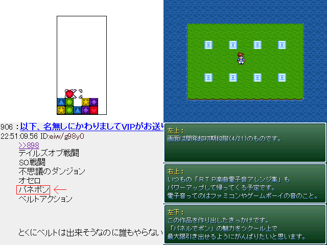

No.51-○○○○のパネポン
No.51-○○○○のパネポン

■○○○○のパネポン くらむぼん◆u01SgdAzLA
紹介文
「提出当日ゲームフォルダ丸ごと削除事件」などなど色々な事件が発生しましたが、 遅刻提出とはいえなんとかシステム完成にこぎつけました！ …システムだけしかないのに提出するあたり 無料でデバッカーを雇おうという魂胆が見え見えですが、 よろしければどうかお付き合いください。ｍ（＿ ＿）ｍ
管理人から一言: 説明しよう！パネルでポンとは、パネルの位置を入れ替えてパネルを消すゲームである！！ （割と適当）
© VIPRPG